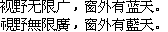

字样资料 / MS Ming 微軟細明
MS Ming 微軟細明 · 14×14
本位图层21,786个映射码位，21,784个非空字形，含20,902个非空汉字；GB2312汉字6,763/6,763、Big5基本汉字13,061/13,061。仅说明这些汉字集合，不等于GB18030或全Unicode覆盖。本层没有非空ASCII，不能推断整个TTF没有西文。 · 14×14 · 简体、繁体
放大观察 · 3×

原尺寸 · 1×
拉丁字符／符号缺字：空格、!、"、#、$、%、&、'、(、)、*、+、,、-、.、/、0、1、2、3、4、5、6、7、8、9、:、;、<、=、>、?、@、A、B、C、D、E、F、G、H、I、J、K、L、M、N、O、P、Q、R、S、T、U、V、W、X、Y、Z、[、\、]、^、_、`、a、b、c、d、e、f、g、h、i、j、k、l、m、n、o、p、q、r、s、t、u、v、w、x、y、z、{、|、}、~。对应位置留空，不借用其他字体补齐。
来源与字样信息
- 家族
- MS Ming 微軟細明
- 排版说明
- 两行简繁固定样文按实际Unicode取字，保留14×14原框、水平bearing 0、垂直bearing 12、advance 14及原像素。行间额外4px为展示布局，不拉齐其他字号、不补ASCII、不裁框。
- 字符框
- 14×14 px
- 字面／墨迹
- 14×14 px
- 字符范围
- 简体、繁体
- 样本文字
- 视野无限广，窗外有蓝天。 視野無限廣，窗外有藍天。
- 覆盖说明
- 本位图层21,786个映射码位，21,784个非空字形，含20,902个非空汉字；GB2312汉字6,763/6,763、Big5基本汉字13,061/13,061。仅说明这些汉字集合，不等于GB18030或全Unicode覆盖。本层没有非空ASCII，不能推断整个TTF没有西文。
- 缺字
- 拉丁字符／符号缺字：空格、!、"、#、$、%、&、'、(、)、*、+、,、-、.、/、0、1、2、3、4、5、6、7、8、9、:、;、<、=、>、?、@、A、B、C、D、E、F、G、H、I、J、K、L、M、N、O、P、Q、R、S、T、U、V、W、X、Y、Z、[、\、]、^、_、`、a、b、c、d、e、f、g、h、i、j、k、l、m、n、o、p、q、r、s、t、u、v、w、x、y、z、{、|、}、~。对应位置留空，不借用其他字体补齐。
- 样张类型
- TTF内原存1-bit 14×14汉字层；本层没有非空ASCII。
- 风格
- 未分类
- 用途
- 系统界面
- 字形来源
- MS Ming／微軟細明 Version 1.00，内部唯一名Microsoft:MS Ming:1999；版权串ZHUHAI Stone Computerized typesetting system R&D LTD., 1995–1999。直接读取EBDT/EBLC v2的原存14ppem、1-bit位图，不栅格化轮廓。仓库路径只是保存位置，不证明Dreamcast或特定Windows CE设备实装；1999是内部标识，不是已证设备出厂日期。
- 授权状态
- 未确认开放再分发授权
- 许可说明
- 第三方公开存档不等于再分发许可。仅展示固定小样图、聚合研究报告和无字模离线脚本；不公开完整ROM、固件、字体或任何字库子集，使用与再分发仍受原权利约束。
- 说明
- 在已查历史及近期具名基准范围内未发现高重复证据；精确比较与近似比较分开，未覆盖全部当前条目，不据原存位图推断全部逐字手工设计或设计原创性。仅收14×14层，不扩展到同文件其他字号。
- 获取方式
自行取得有权处理且SHA匹配的本地msming.ttf；脚本只离线重绘已批准14×14层的固定两行PNG，不联网、不栅格化轮廓、不导出字体或子集。
- 来源
- GitHub第三方保存的MS Ming文件浏览页
- 原生证据
说明：SHA锁定TTF，SFNT表checksum、手工cmap与FontTools映射、EBLC地址/度量和原位图逐行交叉核验；另按字节位位置逐像素复核。
source_sha256：5e9d90f68aae316091bd1bec797c2bc4670a1186caaf601ecae2e7e5661ae353
mappedCharacters：21786
nonblankCjk：20902
gb2312Han：6763
big5Han：13061
big5ExpectedHan：13061
printableAscii：0
bitDepth：1
ppem：14
horiBearingX：0
horiBearingY：12
horiAdvance：14
查看原生设计来源
字体使用与再分发按原来源许可执行。